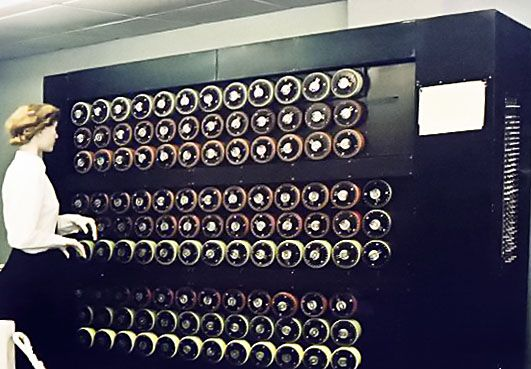
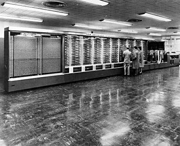
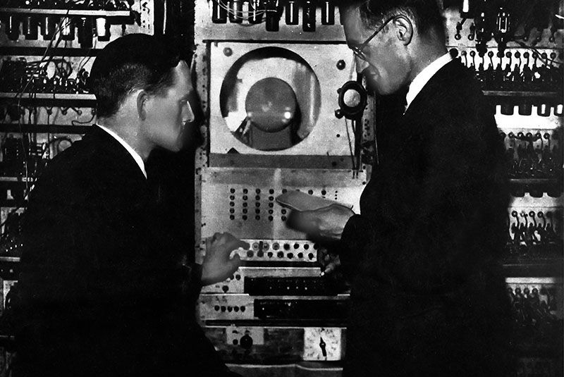
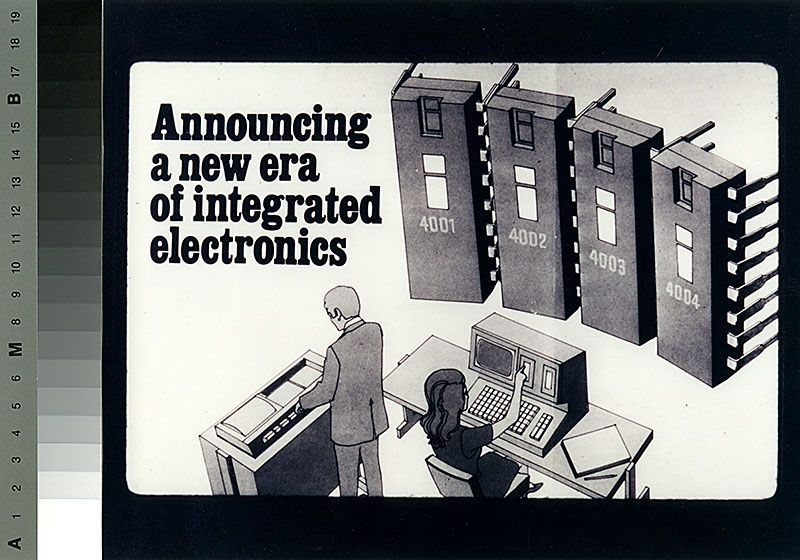
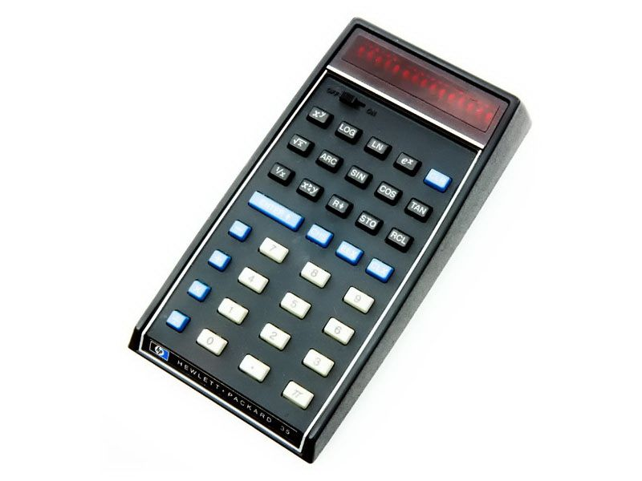
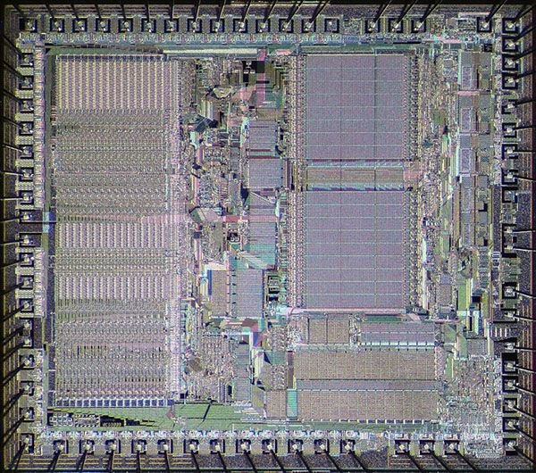
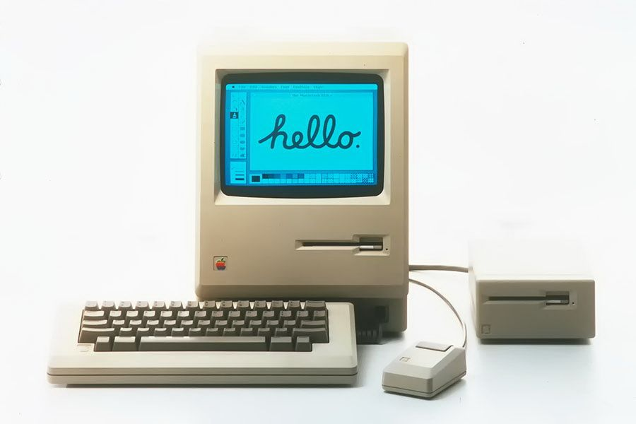
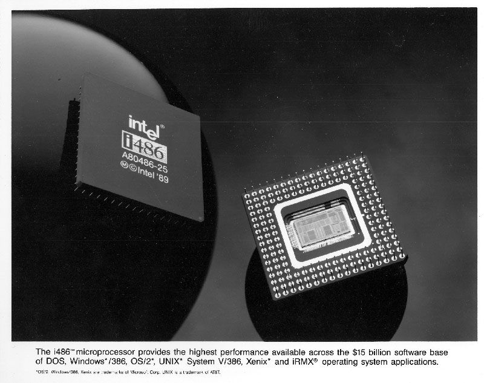
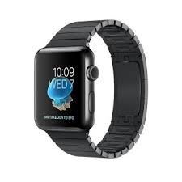

| Date | Information | |
|  | 1941 | The first Bombe, used for decrypting Nazi ENIGMA machine's encryption, is conceived by Alan Turing, a computer pioneer. |
|  | 1944 | The Harvard Mark 1 is a room-sized calculator. It was conceived by Howard Aiken from Harvard, then designed and built by IBM. |
| 1945 | Mathematician John Von Neumann writes about the architecture of a stored-program computer. | |
|  | 1948 | The first computer program ran on the Mancherster "Baby" or SSEM (Small-Scale Experimental Machine). |
|  | 1971 | Intel introduced the first microprocessor. |
|  | 1971 | The most complete and smallest handheld calculator that help HP to become one of the most dominant companies for more than two decades. |
|  | 1979 | Motorola introduced the 68000 microprocessor and the Assembly 68000. |
|  | 1984 | Apple Macintosh. First successful mouse-driven computer. It introduced graphical user interfaces and was based on the 68000 microprocessor. |
|  | 1989 | Intel 80486 microprocessor. First of the sucessful x86 family. |
| Etc... | ||
|  | 2015 | Apple Watch |